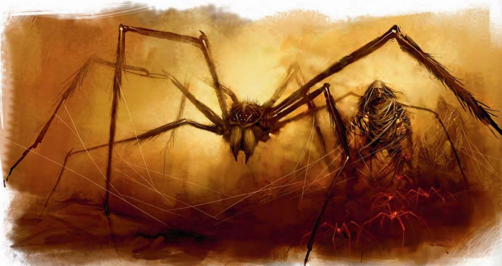

墓穴蛛幼虫集群（Tomb Spider Broodswarm） CR 2超小型魔法兽(集群)
描述（未翻）
| 资料栏位 | 墓穴蛛幼虫集群 超小型魔法兽(集群) |
|---|---|
| 生命骰 | 3d10+6（22HP） |
| 先攻 | +5 |
| 速度 | 20尺(4格),攀爬20尺 |
| 防御等级 | 17(+2 体型, +5 敏捷), 接触 17, 措手不及 12 |
| 基本攻击/擒抱 | +3/- |
| 攻击 | 近战 集群(1d6外加毒素) |
| 全力攻击 | 近战 集群(1d6外加毒素) |
| 面宽/触及 | 10尺/0尺 |
| 特殊攻击 | 扰乱心神,毒素(DC 13,1d4hp/1d4hp) |
| 特殊能力 | 黑暗视觉60尺，昏暗视觉，震颤感知60尺，穿刺和挥砍武器造成一半的伤害，集群免疫，集群易伤，集群特性，网行 |
| 豁免 | 强韧 +5, 反射 +8, 意志 +6 |
| 属性 | 力量 7，敏捷 20，体质 15，智力 1，感知 16，魅力 2 |
| 技能 | 攀爬 +13, 躲藏 +11*, 跳跃 +2, 聆听 +9, 潜行 +7*, 侦查 +9 |
| 专长 | 警觉, 钢铁意志 |
| 环境 | 见后文（未翻） |
| 组织 | 见后文（未翻） |
| 挑战等级 | 2 |
| 宝物 | 无 |
| 阵营 | 总是中立邪恶 |
| 进化 | ― |
| 等级调整 | ― |
描述（未翻）
战斗扰乱心神 (Ex)：强韧 DC 13，失败恶心1回合，此DC基于体质。
毒素 (Ex)：见墓穴蛛
墓穴腐化灵魂（Tomb-Tainted Soul） (Ex)：见墓穴蛛
网行 (Ex)：墓穴蛛幼虫集群可以以攀爬速度在自己的网上移动，并可以准确定位任何接触到网的生物。
技能：墓穴蛛幼虫集群在躲藏、聆听、侦查检定上有+4种族加值，在攀爬检定上有+8种族加值，在跳跃检定上有+10种族加值。即使在被突袭或受威胁状态下，集群也总是可以在攀爬检定中取10，集群进行攀爬检定时使用其敏捷加值而非力量加值。
大型魔法兽
描述（未翻）
| 资料栏位 | 墓穴蛛（Tomb Spider） 大型魔法兽 |
|---|---|
| 生命骰 | 8d10+32（76HP） |
| 先攻 | +5 |
| 速度 | 30尺(6格), 攀爬 20尺 |
| 防御等级 | 19(--1 体型, +5 敏捷, +5 天生), 接触 14, 措手不及 14 |
| 基本攻击/擒抱 | +8/+17 |
| 攻击 | 近战 啮咬+12(2d6+7 外加毒素)或远程 蛛网+12远程接触(纠缠) |
| 全力攻击 | 近战 啮咬+12(2d6+7 外加毒素)或远程 蛛网+12远程接触(纠缠) |
| 面宽/触及 | 10尺/5尺 |
| 特殊攻击 | 毒素 (DC 18,1d4 hp/1d4 hp) |
| 特殊能力 | 黑暗视觉60尺，昏暗视觉, 颤动感知60尺，DR 5/善良，墓穴腐化灵魂 |
| 豁免 | 强韧 +10, 反射 +11, 意志 +7 |
| 属性 | 力量 21，敏捷 20，体质 19，智力 3，感知 16，魅力 18 |
| 技能 | 攀爬 +13, 躲藏 +5*, 跳跃 +15, 聆听 +11, 潜行 +8*, 侦查 +11 |
| 专长 | 警觉, 精通天生武器(啮咬), 钢铁意志 |
| 环境 | 见后文（未翻） |
| 组织 | 见后文（未翻） |
| 挑战等级 | 6 |
| 宝物 | 无 |
| 阵营 | 总是中立邪恶 |
| 进化 | 9--12 HD (大型); 13--24 HD (超大型) |
| 等级调整 | ― |
墓穴蛛是充满了负能量的蜘蛛型生物，它们的毒素能够逆转治疗法术的效果。墓穴蛛在类人生物的尸体上产卵，作为宿主的尸体会再次活动起来成为一具蛛网木乃伊――一个嘲弄生命的僵尸，数百只微小的墓穴蛛会聚集在尸体内部。当它们被释放出来，便形成一个集群涌向敌人。因此墓穴蛛的生命有蛛网木乃伊、幼虫集群、以及成体三个阶段。
战斗毒素 (Ex)：受墓穴蛛毒素影响的生物会因负能量而受到治疗，并因正能量而受到伤害，如同它们是不死生物一般。此效果在豁免失败后持续一分钟。
蛛网（Web） (Ex)：每天三次，墓穴蛛可以投出一道蛛网。这与用捕网进行的攻击类似，但其最大射程为60英尺，射程增量为10英尺，可以影响最大达到中等体型的目标。网会将目标固定在原地，使其无法移动。被纠缠的生物可以通过DC19的逃脱检定脱离，或通过DC19的力量检定破坏蛛网。这些检定的DC基于力量。蛛网有12点生命值，硬度为0，火焰会对网造成双倍伤害。
墓穴腐化灵魂（Tomb-Tainted Soul）(Ex)：墓穴蛛被负能量充满，会被正能量伤害，如同不死生物一般。
技能：墓穴蛛在躲藏、聆听、侦查上有+4种族加值，在攀爬上有+8种族加值，在跳跃上有+10种族加值，墓穴蛛在攀爬检定中总是可以取10，即使处于被突袭或受威胁的情况下。
中型不死生物
描述（未翻）
| 资料栏位 | 蛛网木乃伊（Web Mummy），人类平民 中型不死生物 |
|---|---|
| 生命骰 | 4d12（29HP） |
| 先攻 | ― |
| 速度 | 20尺(4格)，攀爬20尺 |
| 防御等级 | 20(+1 敏捷, +9 天生), 接触 11, 措手不及 19 |
| 基本攻击/擒抱 | +2/+9 |
| 攻击 | 近战 挥击+9(1d6+10) |
| 全力攻击 | 近战 挥击+9(1d6+10) |
| 面宽/触及 | 5尺/5尺 |
| 特殊攻击 | 愤怒 |
| 特殊能力 | 黑暗视觉60尺, 颤动感知60尺,黏着, 幼虫宿主,不死生物特性，DR 3/---，火焰易伤；免疫：蛛网; 亡灵免疫 |
| 豁免 | 强韧 +3, 反射 +2, 意志 +5 |
| 属性 | 力量 25，敏捷 13，体质 ---，智力 ---，感知 12，魅力 7 |
| 技能 | 攀爬 +15, 聆听 +1, 侦查 +1 |
| 专长 | 强韧加强, 健壮 |
| 环境 | 见后文（未翻） |
| 组织 | 见后文（未翻） |
| 挑战等级 | 4 |
| 宝物 | 无 |
| 阵营 | 总是中立邪恶 |
| 进化 | ― |
| 等级调整 | ― |
上面的例子使用一级人类平民作为基础生物，他在使用模板进行调整前的属性值如下: 力量 13, 敏捷 11, 体质 12, 智力 8, 感知 10, 魅力 9.
战斗免疫蛛网（Immunity to Webs）(Ex)：蛛网木乃伊的活动不受蛛网影响，包括由蛛网术创造的蛛网。
愤怒（Enraged）(Ex)：如果创造蛛网木乃伊的墓穴蛛被杀死，木乃伊会激怒，在接下来的10分钟内获得+2攻击和伤害加值。
黏着（Adhesive）(Ex)：蛛网木乃伊有极强的粘性。击中它的武器会被粘在它身上，除非武器持有者通过DC19的反射豁免。使用天生武器的生物如果豁免失败将自动视为被擒抱。从蛛网木乃伊上拔下武器或肢体需要通过DC19的力量检定。这些检定和豁免的DC基于力量。
幼虫宿主（Broodswarm Host）(Ex)：墓穴蛛将蛛网木乃伊作为幼虫的的宿主。当一个小型或更大的蛛网木乃伊被破坏时，一个集群从尸体中释放出来，并在下一轮开始行动。
技能：蛛网木乃伊在攀爬检定上有+8种族加值，它总是可以在攀爬检定中取10，即使是处于被突袭或受威胁的状态下。
墓穴蛛、幼虫集群和蛛网木乃伊在单独遭遇时直接进行战斗。当它们同时出现时，如果其后裔（幼虫集群或蛛网木乃伊）受到威胁，墓穴蛛将会忽视对自身的攻击。它们使用蛛网对付最危险的敌人，所有幼虫集群都会向被蛛网困住的生物发起攻击。
墓穴蛛学识拥有知识（神秘）知识（宗教）等级的人物可以更多地了解墓穴蛛、幼虫集群和蛛网木乃伊。当人物成功通过技能检定时，以下知识将被揭示，其中包括了更低DC的信息。
| 知识（神秘） | 结果 |
|---|---|
| DC 16 | 墓穴蛛是与负能量有特殊联系的魔法兽。这个结果揭示了其全部魔法兽特性。 |
| DC 21 | 受其毒素影响的生物在之后的短时间内会因治疗法术而受到伤害。 |
| 知识（宗教） | 结果 |
|---|---|
| DC 14 | 蛛网木乃伊是因蜘蛛蜘蛛的影响而与负能量联系起来从而再次活动起来的不死生物。这个结果揭示了全部不死生物特性。 |
| DC 19 | 墓穴蛛将卵产在类人生物、人形怪物或巨人的体内，使尸体复生为蛛网木乃伊这个造物没有心智，但异常强壮。如果蛛网木乃伊被摧毁，一股墓穴蛛幼虫集群将从中爆发。 |
| DC 24 | 蛛网木乃伊的弱点是火。 |
"蛛网木乃伊"是一种后天模板，可以应用于任何具实体的巨人、类人生物或人形怪物生物（以下称为基础生物）。
体型与类型：生物的类型变为不死生物。它不获得增强亚种，但保留其他亚种（阵营和类人亚种除外）。
HD骰：将所有当前和未来的生命骰提升为d12，并且基础生物的HD数量+3。
CR：根据原始生命骰，挑战等级调整如下：1-2 HD：CR 4；3-4 HD：CR 5；5-7 HD：CR 6；8-9 HD：CR 7；10-11 HD：CR 8；12-14 HD：CR 9；15-17 HD：CR 10；18-20 HD：CR 11。
阵营：总是中立邪恶。
AC：蛛网木乃伊的天生护甲加值为+9，或者基础生物的自然护甲加值（取较高者）。
速度：蛛网木乃伊的陆地速度降低10英尺（最低10英尺）。其他移动方式的速度不变。此外，蛛网木乃伊如果没有攀爬速度，则获得攀爬速度20英尺。
攻击：蛛网木乃伊保留基础生物的所有攻击方式，并获得一次挥击攻击（如果基础生物没有该攻击方式）。如果基础生物能够使用武器，蛛网木乃伊保留这一能力。拥有天生武器的蛛网木乃伊保留其天生武器。当未装备武器时，蛛网木乃伊可以使用其挥击攻击或主要天生武器（如果有）。装备武器时，它可以选择使用武器或挥击攻击。
伤害：蛛网木乃伊的挥击攻击伤害根据其体型决定。超微型：1；微型：1d2；超小型：1d3；小型：1d4；中型：1d6；大型：1d8；超大型：2d6；巨型：3d6；超巨型：4d6。
攻击选项：蛛网木乃伊失去基础生物的所有攻击选项，获得以下特殊攻击：狂怒（Ex）：如果蛛网木乃伊的创造者（墓穴蜘蛛）被摧毁，木乃伊会进入狂怒状态，在接下来的10分钟内攻击和伤害检定获得+2加值。
属性调整：蛛网木乃伊的属性调整如下：力量+12，敏捷+2，感知+2，魅力-2。作为无智力的亡灵，蛛网木乃伊没有体质或智力属性。
特性SQ：蛛网木乃伊失去基础生物的所有特性，但其获得60尺震颤感知和以下特性。伤害减免（Ex）：3/---。免疫蛛网（Ex）：移动不受蛛网（包括蛛网术创造的蛛网）的影响。火焰易伤（Ex）：受到火焰伤害时额外承受50%的伤害。粘性（Ex）：蛛网木乃伊的身体极其粘性。攻击木乃伊的武器会被黏住，除非攻击者通过一次反射豁免（DC=10+1/2蛛网木乃伊的HD+其力量调整值）。使用天生武器的生物如果豁免失败则自动被擒抱。想从蛛网木乃伊上拔出武器或身体部位需要通过一次力量检定，DC与反射豁免相同。幼虫集群宿主（Ex）：当一只小型或更大的蛛网木乃伊被摧毁时，会释放出一个墓穴蜘蛛幼虫集群，该幼虫集群在下一轮可以行动。
专长：作为无智力生物，蛛网木乃伊失去基础生物的所有专长，但获得钢铁意志和健壮作为奖励专长。
技能：蛛网木乃伊失去基础生物的所有技能。其攀爬速度使其在攀爬检定中获得+8种族加值，并且它始终可以选择在攀爬检定中取10，即使在匆忙或受到威胁的情况下。
进化：无。等级调整：无。
战术与策略单独遭遇时，墓穴蛛、幼虫集群和蛛网木乃伊会采取直接的战斗方式。当它们处于混合群体中时，如果墓穴蛛的后代（幼虫集群或蛛网木乃伊）受到威胁，墓穴蛛会无视针对自身的攻击。它会用蛛网对付看起来最危险的敌人，而幼虫集群则会移动到被困住的生物身上。
遭遇范例墓穴蛛、幼虫集群和蛛网木乃伊可能单独出现，但最具威胁的遭遇涉及多种怪物的组合。
单独遭遇（EL 6）：一只墓穴蛛最近迁移到了某处偏僻农庄附近猎物更丰富的地带。到目前为止，只有几只羊和一条狗失踪。现在这只墓穴蛛即将产卵，开始主动寻找类人生物宿主。
巢穴（EL 8）：墓穴蛛最近一次猎杀的踪迹指向了它那布满蛛网的巢穴。两只蛛网木乃伊在房间内蹒跚徘徊，同时一个幼虫集群在蛛网上迅速穿行。墓穴蛛会躲藏起来，直到PC们发起攻击，然后从后方偷袭他们。
生态墓穴蛛是肉食性生物，捕食从兔子到马匹大小的猎物。然而，它们的生命周期要求它们必须生活在类人生物、怪物类人生物或巨人附近才能繁殖。
所有成年墓穴蛛都能产卵。准备繁殖时，墓穴蛛会找到一个合适的尸体（或杀死这样一个生物），将卵植入其中，然后用蛛网包裹尸体。被寄生的尸体会活化成为蛛网木乃伊，保护其创造者。卵会迅速孵化，幼虫开始以宿主腐烂的内脏为食。在理想条件下，这些幼蛛会互相吞食，直到数周后诞生出一只完全成年的个体。然而，蛛网木乃伊常常在成熟过程完成之前就被摧毁，从而释放出一群未成熟的幼虫集群。极少数情况下，成年墓穴蛛可能从未成熟的幼虫集群中产生，但缺乏蛛网木乃伊的保护环境，大多数这样的幼蛛很快就会死亡。
环境墓穴蛛偏好生活在文明边缘的温带森林中。它们在地下漫游，寻找墓穴或类似能够方便前往地表定居点的地点。一旦找到合适的位置，它们就开始感染所发现的任何尸体。当现成的尸体来源枯竭后，它们便开始在地表捕猎。
典型生理特征一只大型墓穴蛛是死灰色、身形细长的生物，体宽约10英尺，重500磅。个别个体可以长到20英尺宽，重达2000磅。新孵化的幼虫集群幼蛛呈鲜红色，在出生后最初几周内逐渐变为灰色。蛛网木乃伊最初保持原宿主的身材和体重。随着内部幼虫集群以宿主器官为食，木乃伊的体重会减轻，而集群的体重则会增加。
阵营墓穴蛛受到负能量侵蚀，始终为中立邪恶。
社会尽管墓穴蛛具备基础智力，但它们没有真正的社会，也不使用任何语言。它们唯一关心的是生存与繁殖。大多数情况下，墓穴蛛独来独往，拥有各自的狩猎领地，但如果猎物充足，它们也会共享空间。卓尔和蛛化精灵尊敬所有蛛形生物，并鼓励墓穴蛛在它们领土的边界附近筑巢――无论是卓尔与蛛化精灵聚落之间，还是与其他生物领地的交界处。囚犯和尸体会被当作送给墓穴蛛的"点心"。墓穴蛛期待这些食物，除非极度饥饿或受到挑衅，否则不会攻击提供食物的喂养者。
典型宝藏墓穴蛛不会主动收集或囤积宝藏，但它们的巢穴中仍含有与其遭遇等级相符的标准宝藏。这些宝藏来自那些被它们杀死作为食物或寄主植入卵的生物的遗物。
艾伯伦的墓穴蛛墓穴蛛栖息于希恩德瑞克的荒野。近年来，少量墓穴蛛也通过船只的货舱迁移到了科瓦雷。它们大多生活在港口城镇附近的森林地区，但在萨恩、双足飞龙头骨镇，甚至弗拉尔凯克都能发现单独的个体或小型巢穴。这些墓穴蛛已经适应了城市环境，生活在地窖和下水道系统中。
费伦的墓穴蛛尽管墓穴蛛偏好温带森林，但它们同样发现幽暗地域是最佳环境。卓尔很喜欢这种生物，常常鼓励它们的存在。有记录以来最大的墓穴蛛生活在魔索布莱城的巴瑞森家族中，作为"宠物"被豢养。前来参观的人们会惊叹于这只体宽达30英尺的巨大生物。